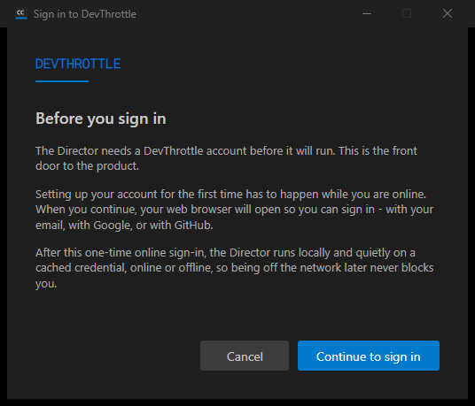
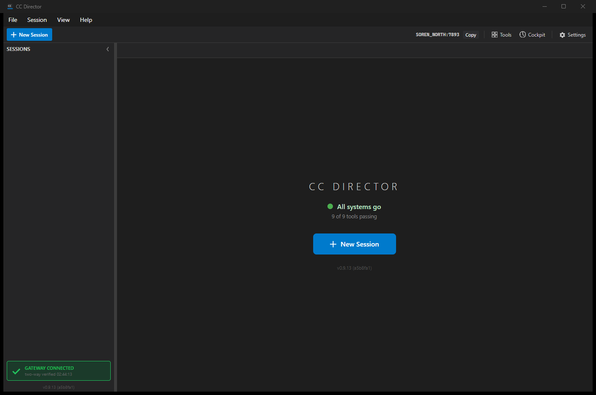

Verifier: QA Agent (independent; own slot-13 build of branch issue-581-first-run-login at commit a5b8fa1, own scheduled-task launch, own proof).
LoopbackLoginListener.cs introduces a hardcoded 127.0.0.1 literal and was not added to the loopback-guard allowlist, so the Core test suite is RED (1 failed / 2198) and PR CI "Build & Test (.NET)" failed.| # | Criterion | Expected | Actual | Result |
|---|---|---|---|---|
| 1 | From the gate, Log in opens the system browser at the expected sign-in address. | System browser launched at the DevThrottle sign-in URL carrying the loopback callback. | Log line: launching system browser at https://devthrottle.com/signin?redirect_uri=http%3A%2F%2F127.0.0.1%3A51679%2Fdevthrottle-login-callback%2F and [BrowserLauncher] OpenSystemDefault: target=.... Loopback listener bound 127.0.0.1 only. |
PASS |
| 2 | Sign-in completion hands a credential back; Director captures it, stores through #583, clears gate, shows main window with no restart. | Capture -> store -> gate clears -> main window, same process. | Posted credential to loopback callback (HTTP 200). Log sequence: credential captured from the browser hand-back -> StoreTokens: stored -> clearing the account gate and showing the main window (no restart) -> Main window shown (account gate passed). Same PID throughout (no restart). Credential blob (406 bytes, encrypted) written. Visual proof below. |
PASS |
| 3 | First-run explanation (account required, first setup must be online) shown before login. | Explanatory dialog appears before the browser opens. | Clicking "Sign in" showed the FirstRunLoginDialog ("Before you sign in" - account required, first setup must be online, browser will open for email/Google/GitHub) BEFORE any browser-launch log line. Visual proof below. | PASS |
| 4 | Re-running installer / applying an update does not clear the credential and does not force re-login. | Credential present, run update, credential still present, Director starts without the gate. | Stored a correctly-signed credential, rebuilt the slot exe (install-dir replacement = the "update"), relaunched. Credential blob survived (per-user config path, untouched by the install). Log: IsLoggedIn: valid=True ... result=True (no network call) -> Main window shown (account gate passed) with NO gate screen line. Visual proof below. |
PASS |
FAIL: the full Core test suite is RED on this branch. Test CcDirector.Core.Tests.NoCrossMachineLoopbackGuardTests.No_new_production_file_hardcodes_cross_machine_loopback fails:
Failed! - Failed: 1, Passed: 2191, Skipped: 6, Total: 2198 New production file(s) contain a loopback literal (127.0.0.1/localhost)... src/CcDirector.Core/Account/LoopbackLoginListener.cs
The new file is a legitimate SAME-machine loopback bind (security rule DT-07), but the architecture-fitness guard requires every such production file to be added to its allowlist with a reason. LoopbackLoginListener.cs is a new file (git status A) and is not in the allowlist. PR CI "Build & Test (.NET)" also FAILED, independently confirming the red suite. The developer's "7 new tests passed" claim was scoped to the new Account tests only; the full suite was not run.
docs/cencon/architecture_manifest.yaml was updated with FirstRunLoginDialog and FirstRunLoginCoordinator / LoopbackLoginListener.


Add LoopbackLoginListener.cs to the Allowlist in src/CcDirector.Core.Tests/NoCrossMachineLoopbackGuardTests.cs with a reason, e.g.:
["src/CcDirector.Core/Account/LoopbackLoginListener.cs"] =
"Binds an HttpListener on 127.0.0.1 only (ephemeral port) to receive the first-run browser sign-in hand-back; same-machine loopback trust boundary (DT-07, issue #581).",
Then re-run the full CcDirector.Core.Tests suite (must be 0 failed) and confirm CI "Build & Test (.NET)" is green before re-handing to QA.